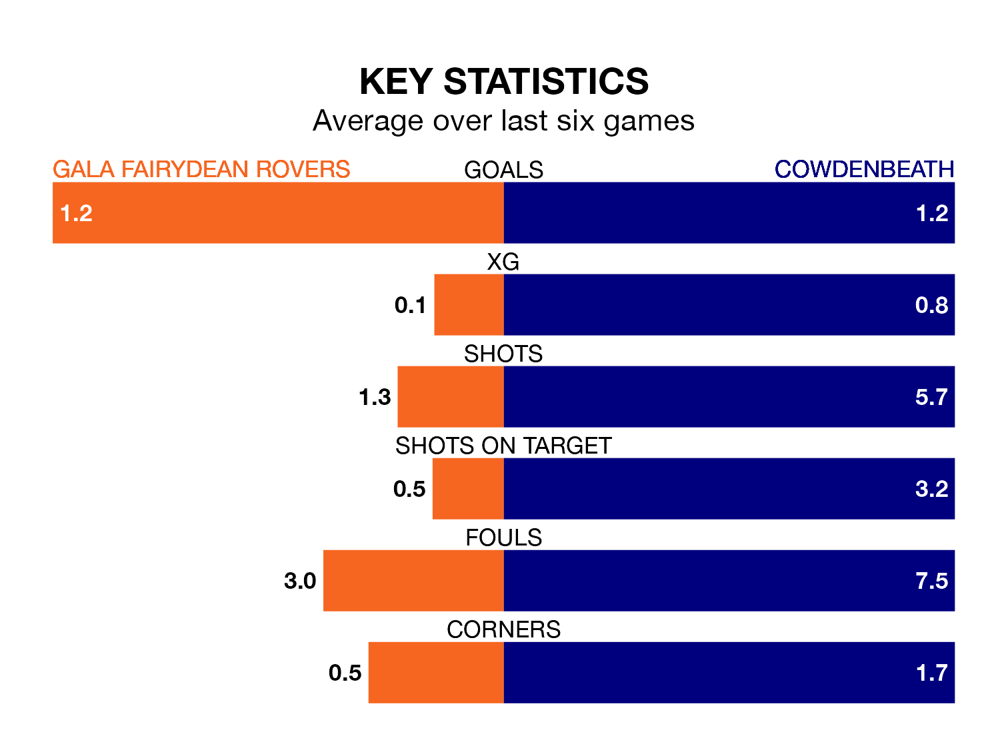

Gala Fairydean Rovers are on a poor run ahead of hosting Cowdenbeath at the Netherdale Football Ground on Saturday, with just four points collected from their last six games.
Gala Fairydean have picked up one win and one draw in their last six Lowland Football League games, and face a Cowdenbeath side whose last six games have brought two wins and one draw.
Gala Fairydean are 15th in the table after 27 games, of which they have won eight and drawn four, earning 28 points.
Cowdenbeath are three places ahead of Rovers in 12th, with eight wins and nine draws putting them on 33 points.
With 38 goals in 27 games so far this season, the hosts are scoring at below the league average rate with 1.4 goals per game. And they are conceding more than average, letting in 68 goals at a rate of 2.5 per game.
The away side are also below average scorers, with 1.6 goals per game, compared to a league average of 1.7. They have also conceded 1.6 goals per game.
In the last three years, Gala Fairydean and Cowdenbeath have played each other on three occasions. Gala Fairydean won one of them and they drew the other.
Their last meeting was on September 9, when they played out a 2-2 draw.
Gala Fairydean's last match was on February 17, a 4-3 loss against Celtic B.
Cowdenbeath beat BSC Glasgow 1-0 last time out, also on February 17.
Updated: 12:18 (UTC), 19/02/24